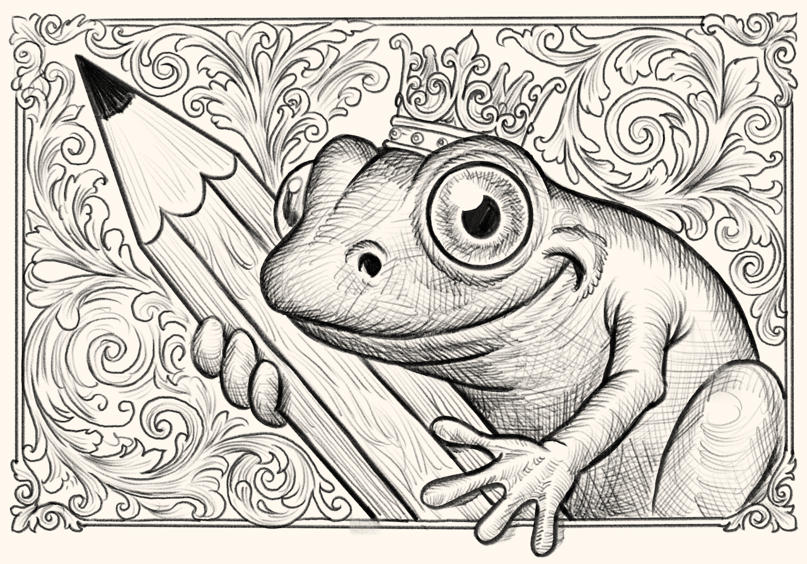

Drawing Prompts
Favorites are saved in your browser. Clearing site data will erase them. Make sure to EXPORT.
Self-taught, curious, passionate, drawing geek.
BUY ME A COFFEELoose-id Sketch gives you prompts to draw from — everyday subjects with Mundane Marvels, surreal dreamscapes with Somnial Scenes, and strange category mashups with Surreal Cauldron.
I made this as a small respite for creativity in an increasingly automated world. Yeah, it's a little silly — but sometimes a silly nudge is exactly what gets you to pick up a pencil. Loose-id Sketch doesn't use live AI — it's just prompts, and you.
I built this for artists like me who just want a nudge to pick up a pencil. If it's helped you draw something, you've already made my day. But if you'd like to buy me a coffee too — wow, thank you.